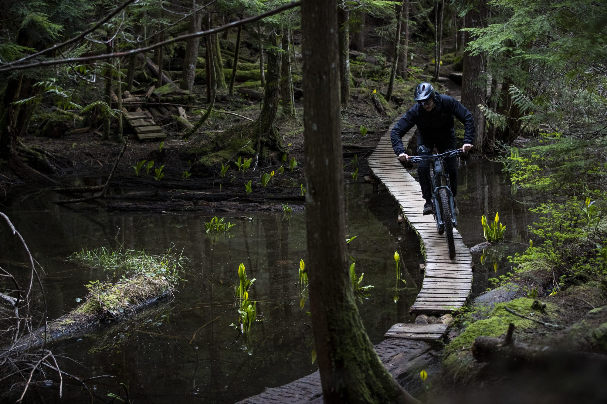
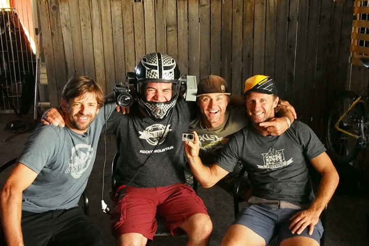

-
1980–1990-е. Леса Норт-Шора
Ещё в 1980-х райдеры начали осваивать леса на окраине Ванкувера (North Shore). Местные строители, например Todd «Digger» Fiander, возводили деревянные мостки и лестницы высоко над землёй. К середине 1990-х похожие идеи появились в Камлупсе, на Sunshine Coast и в Россленде.

Деревянные конструкции Норт-Шора. -
Середина 1990-х. Основатели
Главные имена: Уэйд Симмонс, Ричи Шлей и Бретт Типпи. Симмонс родом из Камлупса, где были длинные крутые песчаные склоны, там-же свое детство провели Ричи и Бретт. Позже их назвали «крёстными отцами фрирайда». Типпи пришёл из сноубординга, а в 1995 году снимался в одном из первых фрирайд-фильмов, Pulp Traction.
-
1998. Фильм Kranked
Продюсер Бьёрн Энга и режиссёр Кристиан Бежен сняли в Камлупсе и Ванкувере фильм Kranked: Live to Ride. Он вышел в апреле 1998 года, снят на 16-мм плёнку, в нём ездили Симмонс, Шлей и Типпи. Тогда других фрирайд-фильмов на рынке просто не было. Серию продолжили, и она сильно повлияла на всю индустрию.

Райдеры 1990-х: Симмонс, Шлей и Типпи. -
1998–2000. Froriders и первые байки
В 1998 году компания Rocky Mountain выпустила модель Pipeline, которую называют первым настоящим фрирайд-велосипедом. Симмонс, Шлей и Типпи подписали контракты как первая в мире профессиональная фрирайд-команда Froriders. До этого маунтинбайкеры зарабатывали только гонками.
-
2000. New World Disorder
В конце 2000 года вышел первый фильм серии New World Disorder от компании Freeride Entertainment. Всего их сняли десять, и в них показали фрирайд, трейлы и даунхилл по всему миру.
-
2001. Первый Red Bull Rampage
В пустыне штата Юта прошёл первый Rampage, призовой фонд был $8 000. Победил уже знакомый нам канадец Уэйд Симмонс. Подробности на отдельной странице.

Rampage на заре своей истории. -
2004. Crankworx
Фестиваль Whistler Gravity Festival, выросший из соревнования Joyride (2001), в 2004 году сменил название на Crankworx. Сегодня это крупнейший фестиваль маунтинбайка, а Red Bull Joyride — главный турнир по слоупстайлу.
-
2008–сегодня. Новая эра
После паузы Rampage вернулся в 2008 году на новой площадке, с деревянными конструкциями. Победил 17-летний Брэндон Семенюк. В 2010 году Симмонса, Шлея и Типпи ввели в Зал славы маунтинбайка, а в 2024-м впервые прошёл женский Rampage, и победила Робин Гумс.